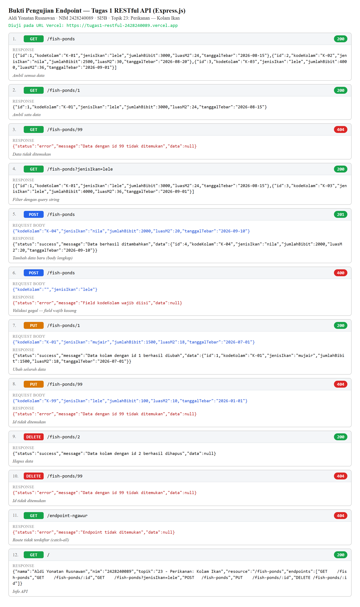
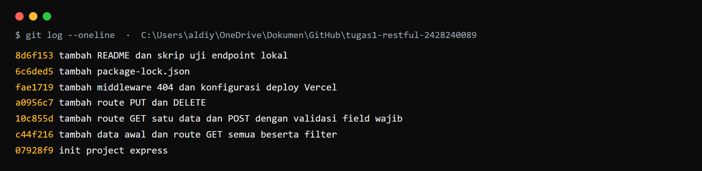

/fish-ponds dengan konvensi URL yang benar (kata benda jamak, tanpa kata kerja), memakai route parameter :id dan filter query string.res.send() teks/HTML.Representational State Transfer (REST) adalah gaya arsitektur layanan web yang memandang seluruh entitas sebagai resource (sumber daya), misalnya kolam ikan. Setiap resource diidentifikasi oleh sebuah URL, dan interaksi dilakukan melalui method HTTP. Pada REST, URL sebaiknya hanya memuat kata benda (bukan kata kerja), karena aksi dinyatakan oleh method HTTP. Konvensi penamaan yang umum dipakai adalah kata benda jamak berhuruf kecil, misalnya /fish-ponds.
Empat method utama yang digunakan pada operasi CRUD (Create, Read, Update, Delete) adalah sebagai berikut.
Status code menyatakan hasil pemrosesan permintaan oleh server. Status yang dipakai pada tugas ini meliputi: 200 (OK) untuk keberhasilan GET/PUT/DELETE; 201 (Created) untuk keberhasilan POST; 400 (Bad Request) bila validasi field wajib gagal; dan 404 (Not Found) bila data atau endpoint tidak ditemukan.
JavaScript Object Notation (JSON) adalah format pertukaran data yang ringan dan mudah dibaca. Pada API ini, response GET mengembalikan data secara langsung (objek untuk satu data, array untuk banyak data), sedangkan response POST, PUT, DELETE, dan error memakai struktur { "status", "message", "data" }.
Express.js adalah framework web minimalis untuk Node.js yang menyediakan mekanisme routing dan middleware. Middleware express.json() berfungsi membaca body request berformat JSON ke dalam req.body. Data pada tugas ini disimpan dalam array di memori (tanpa database), sehingga bersifat sementara — hal ini wajar pada lingkungan serverless seperti Vercel.
Sumber: Fielding, R. T. (2000). Architectural Styles and the Design of Network-based Software Architectures. University of California, Irvine. — MDN Web Docs, HTTP request methods & HTTP response status codes. — Dokumentasi resmi Express.js (expressjs.com).
| Komponen | Keterangan |
|---|---|
| Node.js | v26.9.0 (LTS) |
| npm | 11.19.1 |
| Express.js | v4.22.3 (dependency) |
| nodemon | v3.1.9 (devDependency) |
| Editor kode | Visual Studio Code |
| Tool uji API | curl (baris perintah) dan browser |
| Akun GitHub | aldiii1-XZ (repository publik) |
| Akun Vercel | aldiii1-xz (deploy serverless) |
Project dibuat dengan npm init -y, kemudian memasang Express sebagai dependency dan nodemon sebagai devDependency. Entry point diatur ke app.js beserta script start dan dev.
npm init -y npm install express npm install --save-dev nodemon
Isi package.json (bagian utama):
{
"name": "tugas1-restful-2428240089",
"main": "app.js",
"scripts": {
"start": "node app.js",
"dev": "nodemon app.js"
},
"dependencies": { "express": "^4.21.2" },
"devDependencies": { "nodemon": "^3.1.9" }
}
tugas1-restful-2428240089/ ├── .gitignore # mengabaikan node_modules/ dan .env ├── vercel.json # konfigurasi deploy Vercel ├── package.json ├── app.js # seluruh kode API └── README.md # identitas, link, cara menjalankan, daftar endpoint
Data awal diletakkan pada array fishPonds berisi 3 data, dengan variabel nextId sebagai penanda id berikutnya. Middleware express.json() dipasang untuk membaca body JSON.
const express = require('express');
const app = express();
const PORT = process.env.PORT || 3000;
app.use(express.json());
let fishPonds = [
{ id: 1, kodeKolam: 'K-01', jenisIkan: 'lele', jumlahBibit: 3000, luasM2: 24, tanggalTebar: '2026-08-15' },
{ id: 2, kodeKolam: 'K-02', jenisIkan: 'nila', jumlahBibit: 2500, luasM2: 30, tanggalTebar: '2026-08-20' },
{ id: 3, kodeKolam: 'K-03', jenisIkan: 'lele', jumlahBibit: 4000, luasM2: 36, tanggalTebar: '2026-09-01' },
];
let nextId = 4;
Route awal membalas JSON berisi identitas dan daftar endpoint (bukan teks/HTML).
app.get('/', (req, res) => {
res.json({
nama: 'Aldi Yonatan Rusnawan',
nim: '2428240089',
topik: '23 - Perikanan: Kolam Ikan',
resource: '/fish-ponds',
endpoints: [
'GET /fish-ponds',
'GET /fish-ponds/:id',
'GET /fish-ponds?jenisIkan=lele',
'POST /fish-ponds',
'PUT /fish-ponds/:id',
'DELETE /fish-ponds/:id',
],
});
});
Bila terdapat query string ?jenisIkan=, data disaring dengan req.query dan hasilnya berupa array (boleh kosong).
// GET /fish-ponds dan GET /fish-ponds?jenisIkan=lele
app.get('/fish-ponds', (req, res) => {
const { jenisIkan } = req.query;
if (jenisIkan) {
const hasil = fishPonds.filter(
(k) => k.jenisIkan.toLowerCase() === jenisIkan.toLowerCase()
);
return res.json(hasil);
}
res.json(fishPonds);
});
Route parameter hanya dipakai untuk :id. Bila id tidak ditemukan, server membalas status 404 berformat JSON.
// GET /fish-ponds/:id
app.get('/fish-ponds/:id', (req, res) => {
const id = parseInt(req.params.id);
const kolam = fishPonds.find((k) => k.id === id);
if (!kolam) {
return res.status(404).json({
status: 'error',
message: `Data dengan id ${id} tidak ditemukan`,
data: null,
});
}
res.json(kolam);
});
Seluruh field wajib divalidasi melalui fungsi bantu validasiKolam(), dipakai bersama oleh POST dan PUT.
function validasiKolam(body) {
const { kodeKolam, jenisIkan, jumlahBibit, luasM2, tanggalTebar } = body;
if (!kodeKolam) return 'Field kodeKolam wajib diisi';
if (!jenisIkan) return 'Field jenisIkan wajib diisi';
if (jumlahBibit === undefined || jumlahBibit === null || jumlahBibit === '')
return 'Field jumlahBibit wajib diisi';
if (luasM2 === undefined || luasM2 === null || luasM2 === '')
return 'Field luasM2 wajib diisi';
if (!tanggalTebar) return 'Field tanggalTebar wajib diisi';
if (typeof jumlahBibit !== 'number') return 'Field jumlahBibit harus berupa angka';
if (typeof luasM2 !== 'number') return 'Field luasM2 harus berupa angka';
return null;
}
Id dibuat otomatis oleh server (tidak dikirim di body). Bila validasi gagal → 400; bila berhasil → 201 beserta data yang baru dibuat.
// POST /fish-ponds
app.post('/fish-ponds', (req, res) => {
const error = validasiKolam(req.body);
if (error) {
return res.status(400).json({ status: 'error', message: error, data: null });
}
const { kodeKolam, jenisIkan, jumlahBibit, luasM2, tanggalTebar } = req.body;
const baru = { id: nextId++, kodeKolam, jenisIkan, jumlahBibit, luasM2, tanggalTebar };
fishPonds.push(baru);
res.status(201).json({
status: 'success',
message: 'Data berhasil ditambahkan',
data: baru,
});
});
PUT melakukan penggantian penuh. Bila id tidak ada → 404; bila field wajib kosong → 400.
// PUT /fish-ponds/:id
app.put('/fish-ponds/:id', (req, res) => {
const id = parseInt(req.params.id);
const index = fishPonds.findIndex((k) => k.id === id);
if (index === -1) {
return res.status(404).json({
status: 'error', message: `Data dengan id ${id} tidak ditemukan`, data: null,
});
}
const error = validasiKolam(req.body);
if (error) {
return res.status(400).json({ status: 'error', message: error, data: null });
}
const { kodeKolam, jenisIkan, jumlahBibit, luasM2, tanggalTebar } = req.body;
const diubah = { id, kodeKolam, jenisIkan, jumlahBibit, luasM2, tanggalTebar };
fishPonds[index] = diubah;
res.status(200).json({
status: 'success',
message: `Data kolam dengan id ${id} berhasil diubah`,
data: diubah,
});
});
DELETE mengembalikan status 200 dengan data: null dan pesan yang menyebut id yang dihapus.
// DELETE /fish-ponds/:id
app.delete('/fish-ponds/:id', (req, res) => {
const id = parseInt(req.params.id);
const index = fishPonds.findIndex((k) => k.id === id);
if (index === -1) {
return res.status(404).json({
status: 'error', message: `Data dengan id ${id} tidak ditemukan`, data: null,
});
}
fishPonds.splice(index, 1);
res.status(200).json({
status: 'success',
message: `Data kolam dengan id ${id} berhasil dihapus`,
data: null,
});
});
Route yang tidak terdaftar ditangani middleware catch-all di akhir file. Agar dapat berjalan di Vercel (serverless), app.listen() hanya dijalankan saat lokal dan app diekspor.
// catch-all 404
app.use((req, res) => {
res.status(404).json({
status: 'error', message: 'Endpoint tidak ditemukan', data: null,
});
});
if (process.env.NODE_ENV !== 'production') {
app.listen(PORT, () => {
console.log(`Server berjalan di http://localhost:${PORT}`);
});
}
module.exports = app;
Berkas vercel.json:
{
"version": 2,
"builds": [{ "src": "app.js", "use": "@vercel/node" }],
"routes": [{ "src": "/(.*)", "dest": "app.js" }]
}
Project diinisialisasi dengan Git, lalu dibuat commit bertahap (7 commit). Repository publik dibuat dan di-push, kemudian project di-deploy ke Vercel.
git init git add . git commit -m "init project express" ... git remote add origin https://github.com/aldiii1-XZ/tugas1-restful-2428240089.git git push -u origin main # deploy vercel --prod
URL hasil deploy: https://tugas1-restful-2428240089.vercel.app
Seluruh endpoint diuji pada URL Vercel. Tabel berikut merangkum hasilnya.
| No | Method | Endpoint | Data request | Status diharapkan | Status hasil | Keterangan |
|---|---|---|---|---|---|---|
| 1 | GET | /fish-ponds | — | 200 | 200 | Sesuai |
| 2 | GET | /fish-ponds/1 | — | 200 | 200 | Sesuai |
| 3 | GET | /fish-ponds/99 | — | 404 | 404 | Sesuai |
| 4 | GET | /fish-ponds?jenisIkan=lele | — | 200 | 200 | Sesuai |
| 5 | POST | /fish-ponds | body lengkap | 201 | 201 | Sesuai |
| 6 | POST | /fish-ponds | field wajib kosong | 400 | 400 | Sesuai |
| 7 | PUT | /fish-ponds/1 | body lengkap | 200 | 200 | Sesuai |
| 8 | PUT | /fish-ponds/99 | body lengkap | 404 | 404 | Sesuai |
| 9 | DELETE | /fish-ponds/2 | — | 200 | 200 | Sesuai |
| 10 | DELETE | /fish-ponds/99 | — | 404 | 404 | Sesuai |
| 11 | GET | /endpoint-ngawur | — | 404 | 404 | Sesuai (catch-all) |
| 12 | GET | / | — | 200 | 200 | Sesuai (info API) |
Keseluruhan 12 skenario lulus (100%), termasuk dua skenario gagal wajib: 404 (data tidak ditemukan) dan 400 (validasi field wajib).
Screenshot request dan response (diuji pada URL Vercel):

Setiap method dipilih sesuai fungsinya agar memenuhi prinsip REST. GET dipakai untuk membaca data karena tidak mengubah keadaan server. POST dipakai untuk menambah data karena menghasilkan resource baru, sehingga status yang tepat adalah 201 Created. PUT dipakai untuk mengganti seluruh field data pada id tertentu; karena operasinya mengubah data yang sudah ada, status yang dipakai adalah 200 OK. DELETE menghapus data dan mengembalikan 200 OK beserta pesan yang menyebut id yang dihapus.
Status 400 Bad Request diberikan ketika body request tidak lolos validasi field wajib, sedangkan 404 Not Found diberikan ketika data dengan id tertentu tidak ada atau ketika endpoint yang diakses tidak terdaftar. Pemisahan ini penting agar pengguna API dapat membedakan kesalahan pada data yang dikirim (400) dengan kesalahan pada alamat/id yang dituju (404).
res.status(204).send(). Pada tugas ini DELETE harus membalas JSON 200 dengan data: null, dan route awal harus JSON. Kendala ini diatasi dengan menyusun ulang handler agar memakai res.json() pada seluruh response.validasiKolam() yang mengembalikan pesan error atau null. Dengan cara ini konsistensi validasi terjaga.app.listen() tanpa syarat dapat mengganggu lingkungan serverless. Kendala diatasi dengan memanggil app.listen() hanya bila NODE_ENV !== 'production', lalu mengekspor app untuk Vercel./fish-ponds berhasil dibangun dengan Express.js, dapat dijalankan secara lokal maupun di Vercel, serta tersimpan pada repository GitHub publik dengan 7 commit bertahap.:id dan filter memakai query string.res.send() teks/HTML. Dari 12 skenario pengujian, seluruhnya (100%) dinyatakan lulus.A. Link Repository GitHub:
https://github.com/aldiii1-XZ/tugas1-restful-2428240089
B. Link Deploy Vercel:
https://tugas1-restful-2428240089.vercel.app
C. Screenshot Riwayat Commit (git log --oneline):
